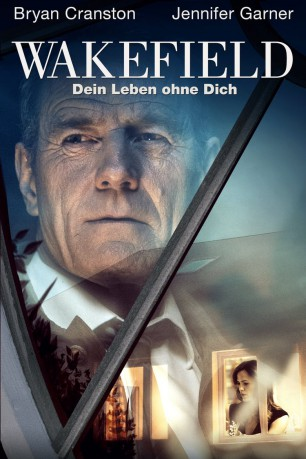

#11741 Wakefield - Dein Leben ohne dich
Alternativ: Wakefield (Englischer Titel)
 
 IMDB-Wertung: 6.3 / 10
IMDB-Wertung: 6.3 / 10  Metascore: 62
Metascore: 62 
Howard Wakefield (Bryan Cranston) möchte sein Leben pausieren, eine Auszeit nehmen, es einfach anhalten. Nach einem Nervenzusammenbruch macht er das auch: Der Familienvater und Ehemann verschwindet einfach. Weder Zuhause noch im Büro lässt er sich blicken, er sagt niemandem Bescheid und verschanzt sich auf einem Dachboden und beobachtet seine Frau Diana (Jennifer Garner) und die Kinder aus nicht allzu weiter Ferne. Das macht er monatelang. Bis er schließlich erkennen muss, dass es nun vielleicht nicht mehr möglich ist, zu seinem alten Leben zurückzukehren.
Jahr: 2016
Dauer: 108 Minuten
FSK: 12
Land: USA Studio: IFC FilmsTonspuren: DTS - ,
Untertitel: Deutsch,
Auflösung: 1080p (1920x816) Größe: 4075 MB
Genre: Drama
Regisseur: Robin Swicord
Drehbuch: E.L. Doctorow, Robin Swicord, Nathaniel Hawthorne
Soundtrack: Aaron Zigman
Darsteller:
 Bryan Cranston als Howard Wakefield
Bryan Cranston als Howard Wakefield Jennifer Garner als Diana Wakefield
Jennifer Garner als Diana Wakefield- Victoria Bruno als Taylor
- Ellery Sprayberry als Giselle
- Monica Lawson als Ellen
- Derek Alvarado als Male Police Officer
 Beverly D'Angelo als Babs
Beverly D'Angelo als Babs- Ian Anthony Dale als Ben Jacobs
 Tracey Walter als Homeless Man
Tracey Walter als Homeless Man- Pippa Bennett-Warner als Emily
- Isaac Leyva als Herbert
- Alexander Zale als Dr. Sondervan
 Jason O'Mara als Dirk Morrison
Jason O'Mara als Dirk Morrison- Eliza Coleman als Gleaner Woman
- Cameron Simmons als Gleaner
- Michael Balin als Cop (uncredited)
- Hal Dion als Birdwatcher (uncredited)
 Frederick Keeve als Professor (uncredited)
Frederick Keeve als Professor (uncredited)- Tommy Otis als Pedestrian (uncredited)
- Ken Spassione als Commuter (uncredited)
- Scott St. Blaze als Bartender (uncredited)
 Bill Timoney als Homeless Man (uncredited)
Bill Timoney als Homeless Man (uncredited)- Carinna Rossignoli als Young Taylor
- Angela Taylor-Jones als Bar Patron (uncredited)
- Kurt Ulbrich als Metro Worker (uncredited)
Datei: X:\2016(N-Z)\Wakefield - Dein Leben ohne dich (2016, FSK12, 1920x816).mkv seit 14.09.2019
Festplatte: Gemischt-01+Anime
 Es gibt insgesamt 182 Filme in der Gruppe '2016(N-Z)'
Es gibt insgesamt 182 Filme in der Gruppe '2016(N-Z)'